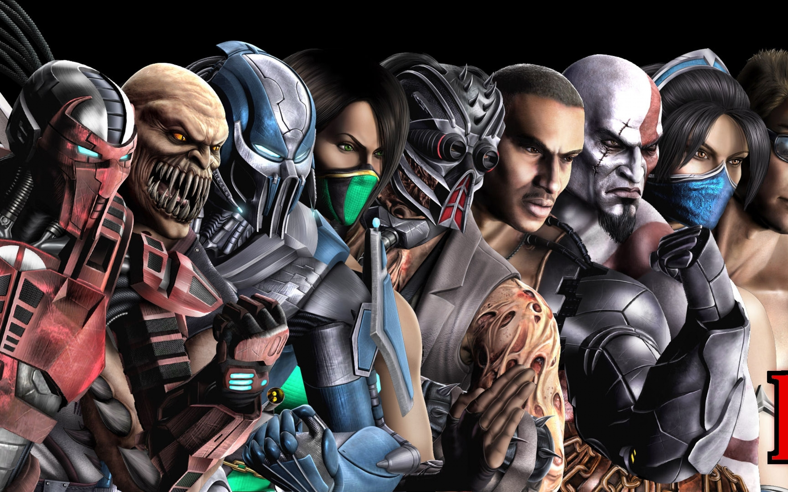

Characters
My favorite characters revolves around their abilities in the game and the overall stregnth and weaknesses. First on my list in Baraka is a Mortal Kombat character who comes from a race in the Outlands. Hes a fierce warrior who has risen through his groups ranks to become one of the most powerful fighters. I also think Baraka just looks cool like most of the characters features.
My Second favorite is Noob Saibot Noob Saibot is one of the most unique characters in the entire franchise. He originated as just a silhouette of the other ninja Mortal Kombat characters. Over time hes grown a unique character and his own special moveset though. Sub-ZeroNearly rounding out the Mortal Kombat 11 characters might be one of the most instantly recognisable, Sub-Zero. Sub Zero is another Ninja character, but hes had a life of its own with players finding him one of the most accessible. Through depictions in story mode and other media, hes become a lot more than a chilled ninja.